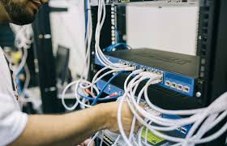

Cara Membuat Kabel Jaringan
Dalam tutorial ini, kita akan belajar cara membuat kabel jaringan dengan standar TIA/EIA 568. Pelajari teknik membuat kabel straight dan cross dengan benar...
Baca SelengkapnyaTemukan informasi, tutorial, dan tips terbaru tentang dunia Teknik Komputer dan Jaringan di sini!
Dalam tutorial ini, kita akan belajar cara membuat kabel jaringan dengan standar TIA/EIA 568. Pelajari teknik membuat kabel straight dan cross dengan benar...
Baca SelengkapnyaInstalasi server adalah dasar yang penting dalam dunia jaringan komputer. Tutorial ini membahas cara instalasi server untuk pemula secara lengkap...
Baca SelengkapnyaPahami konfigurasi dasar router dan switch dalam jaringan. Tutorial ini cocok untuk pemula yang ingin mempelajari dasar-dasar pengaturan router dan switch...
Baca SelengkapnyaKeamanan jaringan sangat penting dalam dunia TI. Tutorial ini menjelaskan konsep dasar keamanan jaringan serta cara melindungi data dari ancaman cyber...
Baca SelengkapnyaPahami berbagai jenis topologi jaringan, seperti topologi bus, star, dan mesh. Artikel ini cocok untuk pemula yang ingin mengerti konsep dasar jaringan...
Baca SelengkapnyaPelajari cara mengatur bandwidth dengan perangkat Mikrotik. Artikel ini membahas teknik dasar manajemen bandwidth untuk meningkatkan efisiensi jaringan...
Baca Selengkapnya